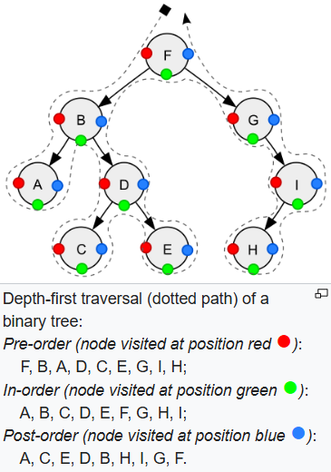
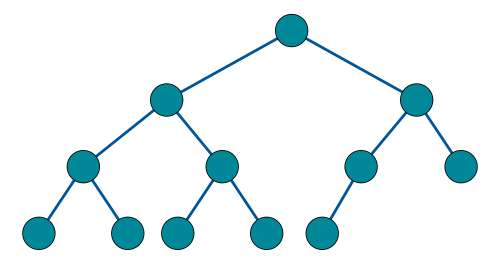
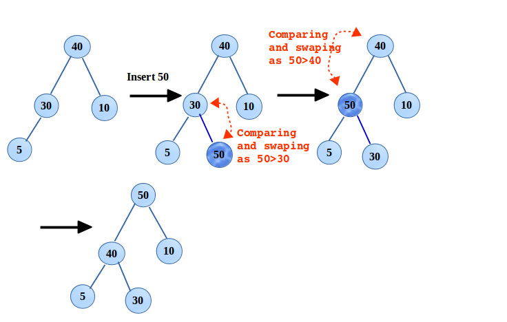
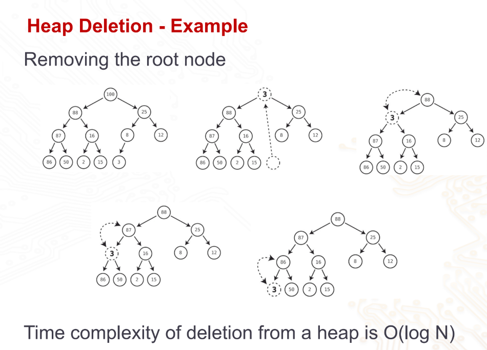

Binary - each node has 0, 1, 2 children.
Left child value < current node value < right child value
class TreeNode:
def __init__(self, value, left=None, right=None):
self.value = value
self.left_child = left
self.right_child = right
node1 = TreeNode(25)
node2 = TreeNode(75)
root = TreeNode(50, node1, node2)Searching (where N = number of elements)
- Best case (balanced tree): log2N
- Worst case (unbalanced): N
- Insertion: O(log2N) to search + 1 step to insert
Deletion: Replace the deleted node with its successor (the smallest value that is greater than the deleted node’s value). Typically find the right child node of the deleted node and drill down the left subtree to find this successor.
E.g. deletion of Z:
Traversal

- In-order traversal: left → root → right. Retrieves values in ascending order for BST.
- Preorder traversal: root → left – right.
- Postorder: left → right → root.
def traverse_inorder(node):
if not node:
return
traverse_inorder(node.left_child)
print(node.value)
traverse_inorder(node.right_child)AVL tree
class Node:
def __init__(self, value):
self.value = value
self.left = None
self.right = None
self.height = 1AVL tree is a height balanced BST, to reduce height and improve search time
Balance factor = height right subtree - height left subtree
-1 <= Balance factor <= 1
- LL imbalance → single right rotation
- LR imbalance → left, right rotation
- RR imbalance → single left rotation
- RL imbalance → right, left rotation
Insertion/deletion follows BST operation, but need to balance after.
Max height = 1.44logN
Ensures fast search operation of O(log N)
HEAPS - to implement priority queue
Complete tree: Every level (except last level) is filled. At the last level, there shouldn’t be nodes to the right of an empty positions.

Max heap: Complete tree + each node greater than both its children.
Insertion: insert at next available rightmost spot on last level. Then continually swap upwards if new node value > parent node value
O(log n) time.

Deletion: Delete root node. Move last node into root node. Swap this node with the greater of its children. O(log n) time.

Implementation of heap: Using array - finding last node is O(1) time.
Root node at array[0], last node at array[-1]
class MaxHeap:
def __init__(self):
self.heap = []
def _parent(self, i):
return (i - 1) // 2
def _left(self, i):
return 2 * i + 1
def _right(self, i):
return 2 * i + 2| Array | Heap | |
|---|---|---|
| Implement priority queue | Use an ordered array. Entries arranged based on priority. Remove from the end of the array, O(1) time for deletion. Shifting requires O(N) time. | Greatest value always at root node. When root node removed, the next greatest value floats to the top of the heap. |
| Insertion | O(N) | O(log N) |
| Deletion | O(1) | O(log N) |
| Comparison | Heap is better to implement priority queue. Both insertion and deletion are consistently fast compared to using array, which is slow for insertions. Priority queue requires fast access to the highest priority item. Heap stores this at the root node, which is easy to find. And when the root node is removed, the next-greatest value floats to the top to replace it. |
| BST | Heap | |
|---|---|---|
| Similarities | Both are binary trees (0, 1, 2 children). Organise based on value of nodes. | |
| Differences | Right child > parent node. Greatest node to be found at end of right subtree. | Parent node > both children. Greatest node found at root node. |
**Why use last node for insertion and deletion into/from heap?
To maintain the complete binary tree property, which is the foundation of the heap’s structure & efficiency.
If last node is not used, the tree becomes unbalanced, and operations may degrade from O(log N) to O(N) time.